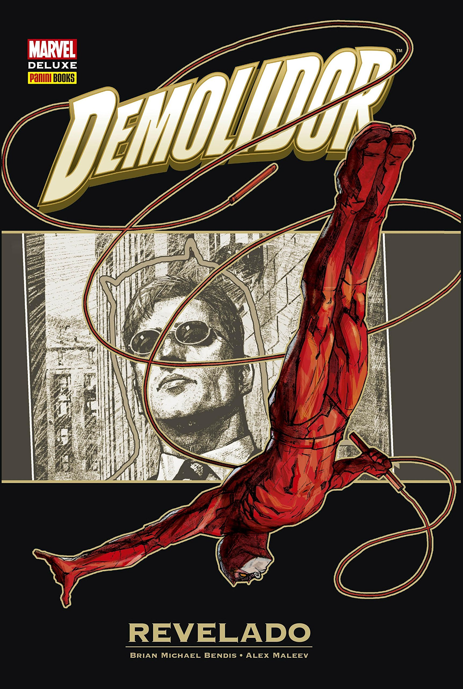
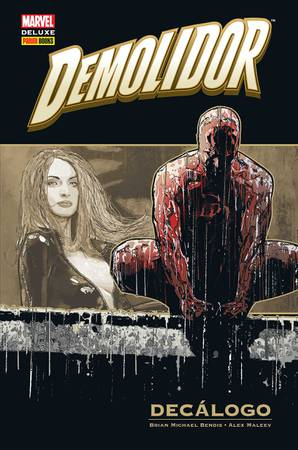
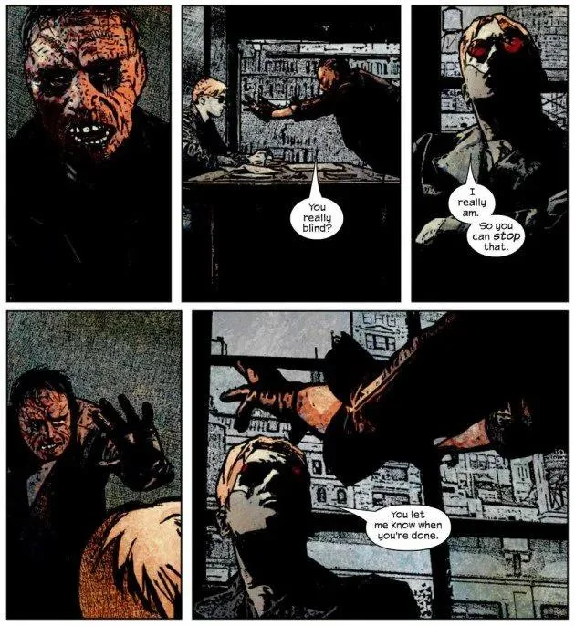

O Demolidor, de Michael Bendis
Brian Michael Bendis é um dos escritores mais influentes na história do Demolidor, especialmente durante sua fase na série. Sua abordagem trouxe uma nova profundidade ao personagem e introduziu narrativas mais sombrias e complexas. Aqui estão algumas das principais contribuições de Bendis para o universo do Demolidor:
Demolidor: O Demônio do Pavilhão D

Nesta obra, Bendis explora a vida de Matt Murdock em um ambiente prisional, onde ele enfrenta não apenas os desafios de ser um super-herói, mas também as complexidades de sua identidade e moralidade. Essa série é conhecida por sua narrativa intensa e desenvolvimento de personagens.
Demolidor: Fim dos Dias

Neste título, Bendis, junto com uma equipe de artistas, conta a última história do Demolidor. A narrativa se passa anos após a última aparição do herói, oferecendo uma reflexão sobre seu legado e as consequências de suas ações ao longo da vida.
Demolidor: Revelado
Outra obra significativa de Bendis, onde ele continua a aprofundar a psicologia de Matt Murdock e suas interações com outros personagens do universo Marvel. Essa série é notável pela sua exploração de temas como culpa, redenção e a luta interna de Murdock
O rei da cozinha do inferno

Demolidor: O Rei da Cozinha do Inferno" é um arco importante na fase de Brian Michael Bendis no título do Demolidor. A história explora as consequências da revelação da identidade secreta de Matt Murdock como o vigilante mascarado.
Após a manchete "Herói Mascarado da Cozinha do Inferno é Advogado Cego" estampar os jornais de Nova York, Murdock enfrenta uma batalha legal contra o veículo responsável pela revelação bombástica. Ao mesmo tempo, ele precisa lidar com os problemas que surgem na Cozinha do Inferno devido ao vácuo de poder deixado pela ausência do Rei do Crime.
Decalogo
No arco "Decálogo", que dá nome ao encadernado, Bendis explora a vida de Matt Murdock sob uma nova perspectiva. Em vez de narrar a história apenas do ponto de vista de Murdock, a trama é contada através das experiências de outros personagens que interagem com ele. Isso proporciona uma visão mais ampla das consequências de suas ações e de sua influência sobre o mundo ao seu redor.
A história também inclui a participação de personagens como a Viúva-Negra, que retorna para ajudar Murdock a lidar com os desafios que enfrenta como o novo Rei da Cozinha do Inferno.
Estilo e Impacto
O estilo de Bendis é caracterizado por diálogos naturais e uma narrativa que muitas vezes se concentra nas consequências emocionais das ações dos personagens. Sua fase no Demolidor é amplamente reconhecida por redefinir o personagem para uma nova geração, trazendo um foco maior em suas lutas pessoais e dilemas morais.
Essas obras de Bendis são essenciais para entender a evolução do Demolidor e seu impacto no universo dos quadrinhos.